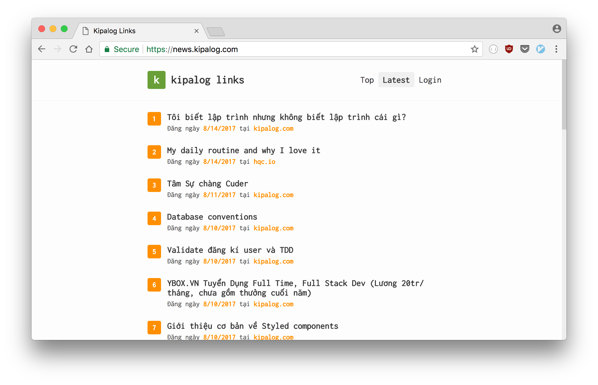

Rust for the Web
Table of Contents
"Can we create web apps in Rust?" - Many people asked. So am I.
My primary goal when I started learning Rust is to make a move from my ducky JavaScript tech stack (Node.js Express), that means, to make web apps in Rust.
And after a year, I learned something. So I write this post to tell you my journal into Rust Web Programming.
There are many approach to creating web apps in Rust, for example, compile Rust code to client-side JavaScript, writing a RESTful API, or building an isomorphic web app just like it's 2012. I'll go one by one.
1 Client-side JavaScript in Rust
The first thing that came to my mind is to have component-based architecture just like React. This mean, you need to find a way to run Rust code on the web browser.
Thanks to ASM.js and WebAssembly, this is possible, with a quick setup, you can compile your Rust code to ASM.js/WebAssembly in few minutes.
Now, for the component-based architecture, I just created some macros to wrap over the stdweb crate and rendering HTML elements via browser's DOM API.
https://github.com/huytd/rust-webapp-template/blob/master/src/main.rs#L13-L58
Don't be scared if you think I just posted an alien language. The
component! macro is used to define a custom element. The
mount_component! macro is used to append an element to the document,
and html! macro is to create an element from HTML string.
Here is how I use it:
component!(AppComponent => {
init: {
let e: Element = html!("
<div>
<p>
<span>Hello</span>
<span>World</span>
</p>
<GreenButton />
</div>
");
let mut button = GreenButton::new();
mount_component!(e, "GreenButton", button);
e
},
render: |this: &Element| {
}
});
component!(GreenButton => {
init: {
let button = document().create_element("button");
button.add_event_listener(move |_: ClickEvent| {
js! {
alert("Yo! This is the Green Button!");
}
});
button
},
render: |this: &Element| {
this.set_text_content("This is a button");
}
});
fn main() {
stdweb::initialize();
let mut app = AppComponent::new();
mount_component!(document(), "#root", app);
stdweb::event_loop();
}
Who need React anymore when you can even write an onClick event in
your Rust code :D (just kidding).
You might want to take a look at the full project to see in details how to use stdweb with
these macros.
2 RESTful API in Rust
If you don't want to give up your JavaScript frontend, this is the better approach: Just write an API server in Rust to make it work with your exist frontend.
There are a handful number of frameworks available for you to choose. Let's take a look at AreWeWebYet.
For people who prefer to have slimmer framework, tiny-http is the best choice.
For simplicty, you can use nickel.rs, it's one of the most lightweight framework in Rust that inspired by Node's Express.
For HTTP/2 support, solicit is the only choice you have right now.
Personally, I prefer to use Rocket as it is a very good framework that has many features, but still keep your code simple, with very elegant syntax. It also added built-in TLS support recently. The only minus point for this framework is it required to use nightly Rust version.
This is the simple route handler for a GET method in Rocket.
#[get("/posts", format = "application/json")]
fn get_posts(page: i64) -> Json<Value> {
Json(json!({
"result": []
}))
}
I usually let Rocket serve the static files for me, just like what I
did in Express:
#[get("/")]
fn index() -> io::Result<NamedFile> {
NamedFile::open("www/index.html")
}
#[get("/<file..>", rank = 5)]
fn files(file: PathBuf) -> Option<NamedFile> {
NamedFile::open(Path::new("www/").join(file)).ok()
}
So I can put all my frontend code inside www folder, and access it
along my RESTful API. For example, a typical project struct will be:
├── Cargo.toml
├── README.md
├── src
│ ├── main.rs
│ └── ...Rust code here...
└── www
├── index.html
├── main.js
├── package.json
├── webpack.config.js
└── ...JavaScript code here...
To work with database, it's a good idea to use Diesel.
If you want to see a Rocket + Diesel + React project in action, I
will shamelessly plug one of my side project
here and its source code on
Github.

Please feel free take a look or use it if it good enough for you.
3 Isomorphic web app in Rust
The last one, my favorite one, like it's 2012, when I started my programming career with my first PHP job.
No more single page applications, no more client-side rendered UI. No more broken web pages when people disabled JavaScript on their browsers.
Rocket and many other frameworks has the ability to render the HTML
templates after binding some data into it.
#[get("/")]
fn index() -> Template {
let news = fetch_from(RSS_URL).ok().expect("Could not read RSS");
Template::render("index", &news)
}
I recently built a Hacker News reader using
Rocket + Handlebars templates, you can take a look at
its source code here
(hey, I know, it's a shameless PR again).

I hope the three approaches I listed here will be helpful if you're the one who asking: "Can Rust make webs?". Each one has pros and cons, and depends on your project, you can pick one of them or mixing them all together.
Please feel free to leave a comment on Hacker News or Reddit to share your thoughts.